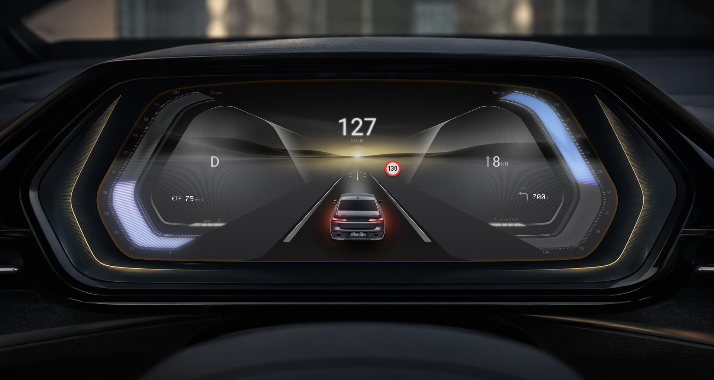
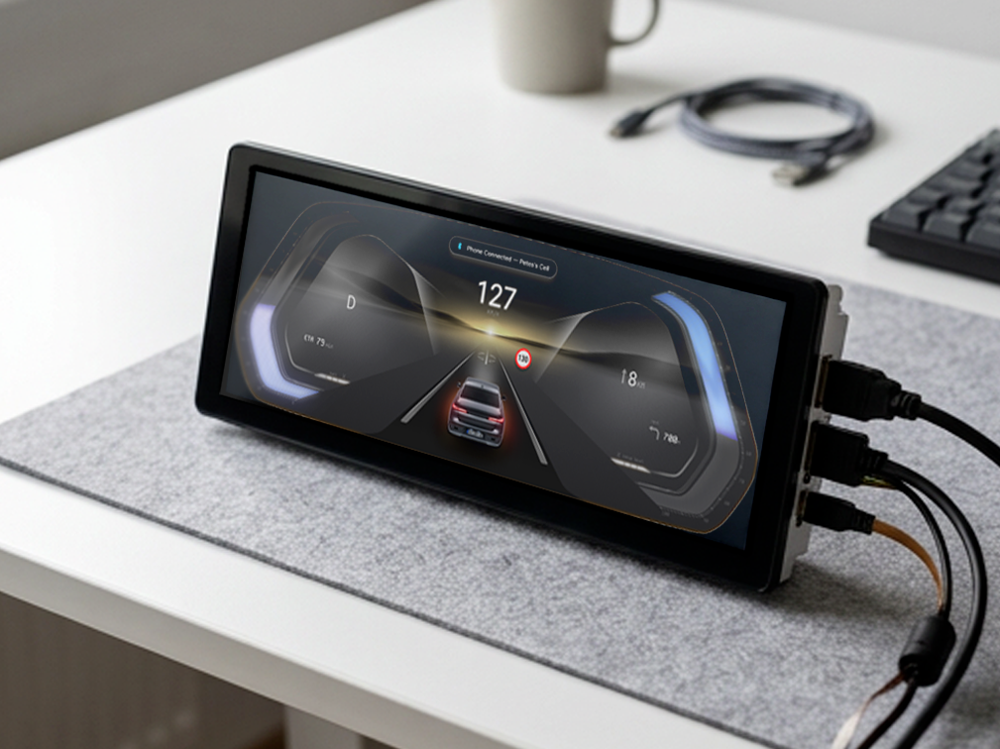
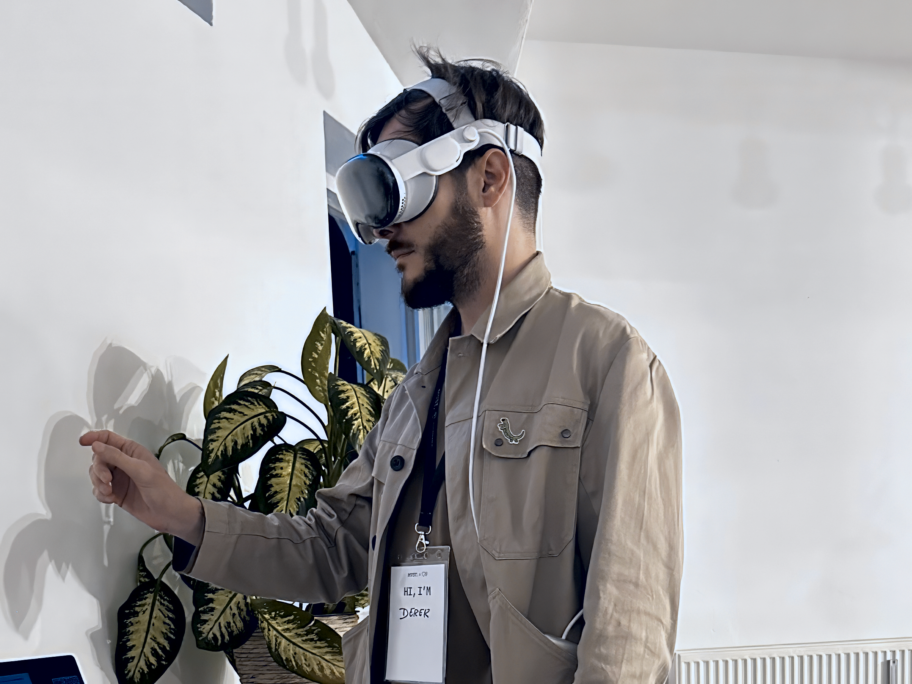

Interface design for the automotive world — from icons to full system logic. Close collaboration with major OEMs, spanning concept, prototyping, and series development for driver assistance and entertainment.

Even though I played with Hot Wheels as a kid, I'd hesitate to call myself a typical car enthusiast. What always caught my attention was the built-in techology — my interest skipped past the engine and went straight to the gadgets, and later, the screens. As thosebecame increasingly central in the automotive world, my involvement with them grew right along with it.
My work in the automotive space has spanned close collaboration with major OEMs, where I’ve been involved across nearly every layer of interface design for the vehicle interior. On the visual side, this ranged from designing individual icons to creating complex animations for specific interaction scenarios—the kind of detail that shapes how a system feels in the moment. On the structural side, it meant working on UX/UI design and prototyping for the central display, translating early concepts into functioning system logic.
This work spanned both pre-development and series development of system functions for driver assistance and entertainment, giving me a view into how a concept evolves from an early idea into something that actually ships. Alongside this, I contributed to research exploring new display and interaction concepts—work focused less on what already existed and more on what could come next.


What stayed with me most wasn’t just the deliverables, but the insight I gained into how UX and design teams operate at that scale—from early-stage concepts to detailed interface execution and the underlying design architecture.
It draws on a fairly analytical approach and the ability to break down complex relationships into something clear and communicable, which I see as one of my core strengths. It also led me to train design teams, helping others navigate both the practical use of creative software and the broader principles behind UX and HMI design. In doing so, I further developed my own ability to translate design thinking into something others can understand and apply.
None of this feels finished—and that’s exactly the point. I'm equally engaged in speculative and innovative design work, which reflects a broader mindset of mine: staying informed about emerging technologies, engaging with them critically, and applying that knowledge where it's genuinely useful.
At the same time, I try to stay attentive to how technology is actually developing within society — not adopting new tools or paradigms just because they exist, but asking where they meaningfully fit into a larger context. That same curiosity extends beyond the automotive industry. My work isn’t defined by a single domain, but by a continuous desire to explore, understand, and apply what’s next—wherever it may lead.>´